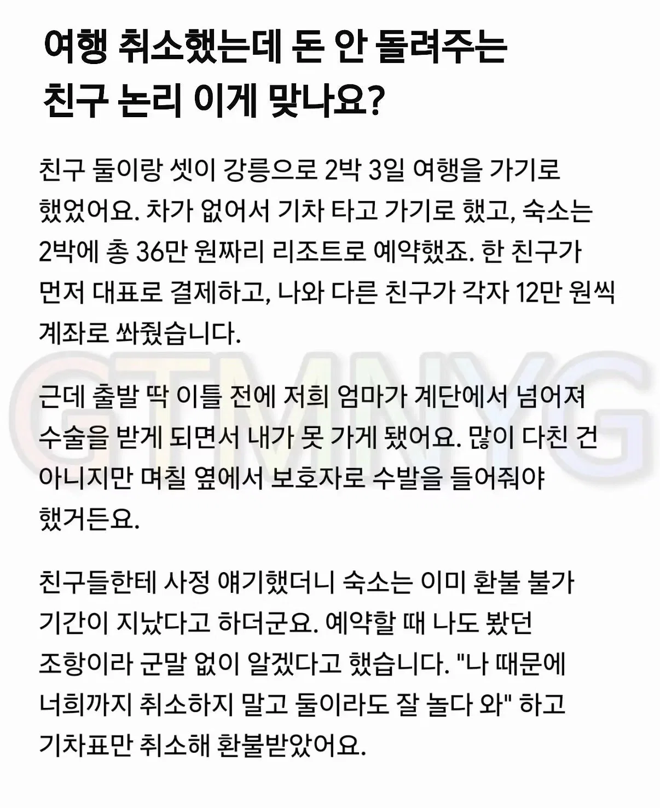
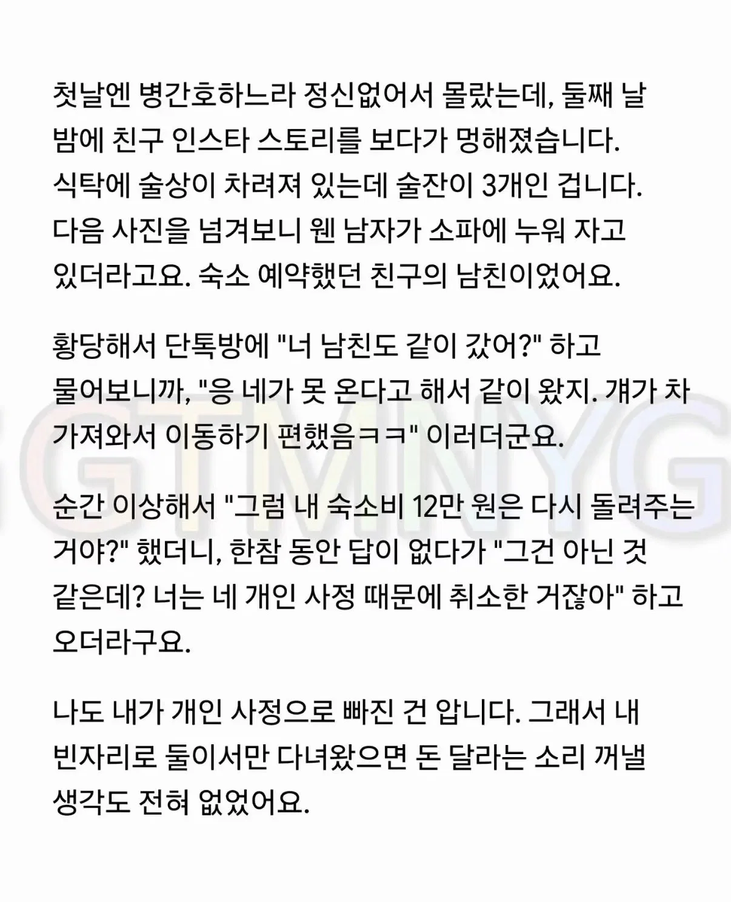
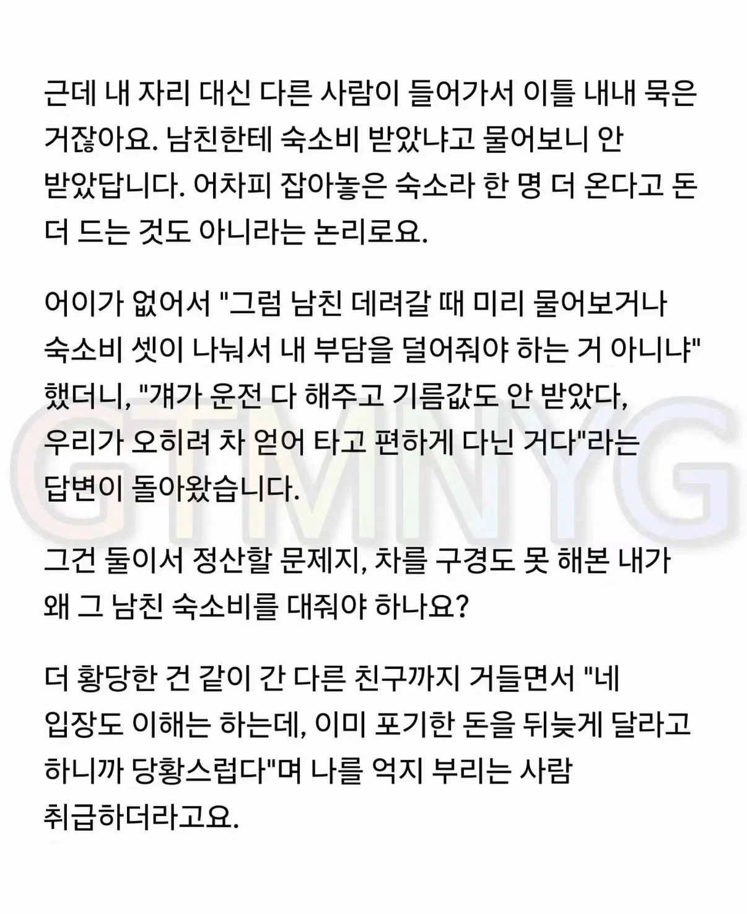
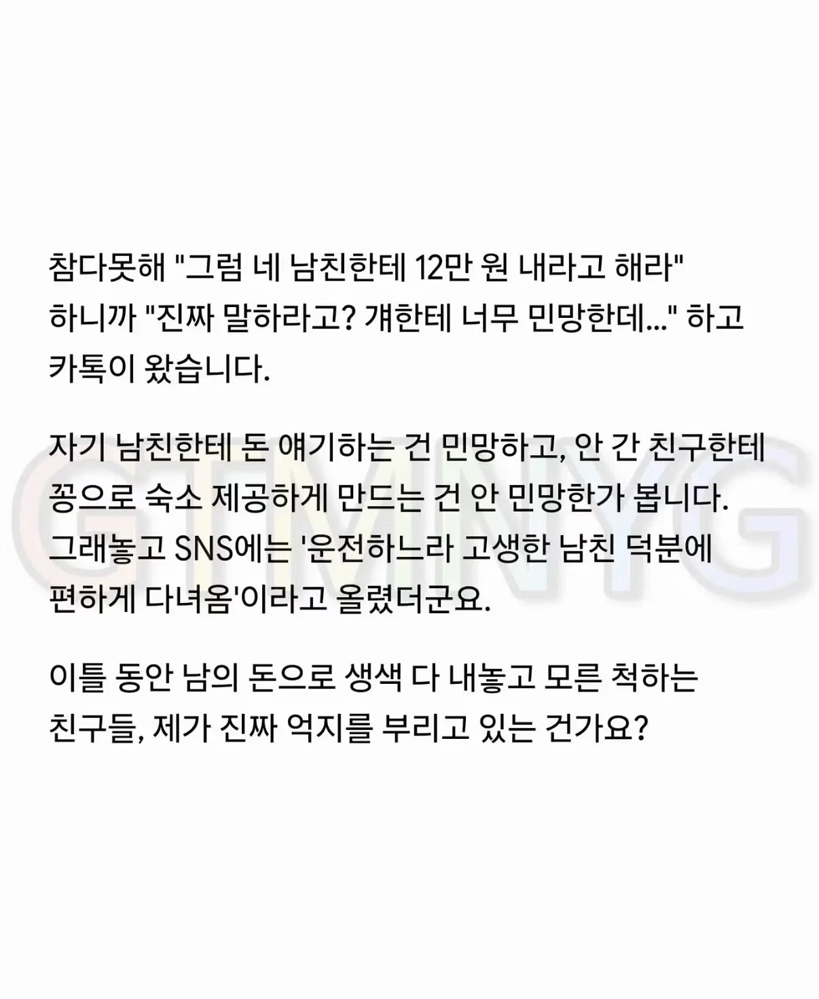

1. 3명이서 여행 숙소로 36만원 분담함
2. 여행일 직전에 A가 못가게 됨
3. A도 미안한 마음에 환불 없이 다녀와라 전함
4. 나중에 보니 B남친껴서 3명으로 맞춰 다녀옴
5. 이럴꺼면 내 돈 돌려줘야 하는거 아니냐 싸움




1. 3명이서 여행 숙소로 36만원 분담함
2. 여행일 직전에 A가 못가게 됨
3. A도 미안한 마음에 환불 없이 다녀와라 전함
4. 나중에 보니 B남친껴서 3명으로 맞춰 다녀옴
5. 이럴꺼면 내 돈 돌려줘야 하는거 아니냐 싸움
못가게 된건 본인 사정이긴한데
저럴땐 최소한의 예의로 너대신 다른 사람 끼어서 간다고 이야기는 미리 할수 있지 않나 싶음
내 가치관에서는 친구 부모님이 다치셔서 못가게 된건데
돈 안돌려주는게 맞다하는게 이상하네
친구 사이에 친구 부모님 다치신 것 때문에 6만원 손해보는게 그렇게 싫은가?
심지어 남친으로 빈자리 채울 수 있으면 걍 남친한테 12만원 받고 못온 친구한테 돈 돌려주면 되는 거 아닌가...
친구 사이에 쫌생이 마냥 구는게 제일 역겨운데
나도 다른 사람도 아니고 가족이 다쳤는데 이걸 개인사정이니 쓰는 애들이 더 많은거 보고 좀 그렇네...
일이라 해도 큰 문제가 아니면 사람 상대하는 일 에서는 특히나 더 유리한 위치에서 이야기 할 수 있고 한번 더 신경을 써줄수도 있거든
돈 달라고도 안하겠지만 친구관계에서 계약처럼 이야기 하는 애들이면 그다지 가까이 두고 싶지 않음
계집을 이해하려 하지마 걔넨 자기는 단 1g도 손해 보면 안돼고 측은지심, 염치란게 없는 사람이 꽤나 많음
쟨 아깝게 날릴거 합리적으로 잘 이용한건데 왜 난린가 생각할텐데, 저렇게 행동하는 애들은 보통 자기가 반대상황일 때 그냥 넘어가지 않을걸. 친구한테 미리 얘기라도 했으면 또 몰라
말하기 싫었겠지 정확하겐 조금이라도 아쉬운 소리해서(수혜자가 자기 남친이니까) 자기가 감정적으로 손해보기 싫으니까 회피한거임
환불 불가인 상태에서 이미 작성자 돈은 없어진거임
난 작성자 말고 작성자의 친구 입장에서 생각한거임
내 친구가 부모님이 다치셔서 부득이하게 여행을 취소하게 됐다? 그냥 친구니까 위로할 겸 서로 감정 상할일 없을 겸 친구2 설득해서 걍 6만원씩 더 내자고 할듯
근데 심지어 내 애인이 빈자리에 낀다? 걍 내가 12만원을 더 내든, 애인한테 6만원만 내라 하든 했을 듯.
걍 여행 동호회 사람, 친한 지인, 손절해도 괜찮은 사이면 12만원 안돌려주겠는데
같이 여행갈 정도로 친한 친구면 걍 12만원 돌려주고 말겠다 싶음
친구 사이에 부득이한 일로 6~12만원 손해보는게 싸우고 손절할 일인가 싶음
뭔소리임? 그건 둘만 갔을때 얘기고
남친이 참가한 순간 그돈은 남친이 쓴거임
선불로 음식을 시켰는데 일이 생겨서 가봐야해
너희끼리 먹으라고 하고 떠났는데 친구가 자기 남자친구 불러서 같이 먹었어
음식값을 받아야해?
그걸 결정하는게 돈 낸 당사자 아님?
"나 때문에 너희까지 취소하지 말고 둘이라도 잘 놀다 와"
이미 작성자는 손 뗐음
명확하게 따져보자
작성자가 간병때문에 못가게됨
환불 불가 - 리조트 측에게 돌려받을 돈 소멸
너희끼리라도 재밌게 놀다와 - 다른 지인 꽂아 넣거나 친구들 지인 불렀을때 그 지인에게 되팔 권리 포기
손 뗐으면 그냥 깔끔하게 잘놀다왔냐 나도 가고싶었는데 아쉽다하면되고
친구가 니 몫 돌려주겠다고 먼저 얘기하면 땡큐인거지
인원 채워갔으니까 돈 내놓으라고 하는게 웃겨
손뗐다 이러는게 진짜 역겨운포인트네
와 권리 포기, 손 뗐다 라는 말이 존나 웃기네. 친구 맞나? 나같으면 이런 인간이랑 바로 손절함 ㅋㅋㅋ
엄연히 돈을 쓴 사람이 존재하는데 그사람 사정상 참가 못했다고 해서 그게 꽁돈이 되었다고 생각하는게 진짜 이상하네. 거기다 친구 돈 아니냐?
니가 못갔으니까 그 시점에서 더 말할 것도 없잖아
근데 셋이서 가는데 한명이빠지고 새롭게 한명이 추가됬다면 사전에 고지는 해줘야하는거아닌가? 돈을냈잖아 권리가 생겼고 그 권리를 안가겟다는걸로 행사했다면 그자리는 안간사람거아님? 영화관에서 3자리예약했는데 볼일생겨서 못간다 치면 그자리가 내꺼고 양도할수있는건데 허락도안맡고 양도해버렸잖아? 물론 돈달라고한건 최악이긴함
지가 못가서 빠졌는데, 심지어 여행 끝나고 소식 듣고 환불해달라고 한다? 이건 진상이지
나였음 절반인 6만원 줄듯 사유도 사유고 이게 서로 얼굴 덜 붉히는 거 같아
이게 민심이 반반인게 믿기지가 않네
남이썼으면 어느정돈 돌려주지... 의 상하게
친구가 준 돈으로 남친이랑 즐겁게 다 즐겨놓고 입 싹 닫는건 좀 아니지
심보가 좆같군
둘다이해감
글쓴이가 이상하다는 놈들은 친구가 없냐???
ㅋㅋㅋㅋㅋㅋㅋㅋㅋ시발 댓글봐 얘네가 뭐 워크샵갔냐? 친구 맞아?
많은 개붕이들이 친구가 없는 이유가 있어 ㅋㅋㅋ
황밸이긴 한가보다
대타로온사람은 입장이 다르지
공짜기때문에 편한 마음으로 왔을꺼고
그대신에 기름값에 차로 운전까지 한걸테고
돌려달라면 돌려주고 손절함
ㅋㅋㅋ 구질구질하다 돌려줘야지
걍 신경 안쓸거같긴 한데 나는
나 못감 ㅈㅅ 니네 알아하쇼 한거잖아
뭘 또 대타 갔으면 돈을 받니 마니 하고있냐
삐빅 32점입니다
누가 맞고 틀리고 정답 맞추면서 친구 할꺼임?
그냥 성향이 안맞으니 서로 갈길 가면되는데
이래서 평생 친구 구하는기 힘든거지
본인 기준에서 친구인거지 저건 친구가 아님
심뽀가 개좆이네 ;;
지가 엄마 다쳤는데 가던가 그럼
12만원은 3이가기로 한 여행 여행 파토 낸 사람이 미안해서 내는 위약금이지,
그걸 다른 사람이 시간내서 빈자리 채워줬으면 고맙다고 해야 하는거고
그걸 보고 아 내가 못가서 저 여행을 망칠뻔 했는데 저 사람이 와줬다니 다행이다 라고 생각해야 정상.
시-x 내돈으로 공짜로 놀았네 열받네? 라고 생각하는 사람이면 나는 돈돌려주고 손절할듯ㅋㅋㅋ
나라면 이해하고 걍 돈 돌려줌
근데 사회적으로 보면 돈 안돌려주지
보통 미리 계획된 약속에 자기가 갑자기 빠지게되면 패널티라는걸 부여한다
각종 표 임박할수록 취소 패널티가 높아지는게 그 이유
위 상황도 애초에 남친이 숙소공짜 아니였으면 굳이 안갔을수도 있지
얼마나 깊은 친구인지도 모르고
각자 경제적 상황도 모르는데
글쓴이 실드 치는 사람들은
엄마라는 단어에만 너무 매몰된거같네
일단 내가 친구 입장이었으면
다른 사정도 아니고, 부모님 다쳐서 그런거니까
환불 되고 안되고를 떠나서 숙박비 돌려줌
또 내가 글쓴 입장에서는
이미 숙박비 안 돌려주기로 결정해놓고
거기 누굴 데려가든 신경 안쓸 것 같음
둘이서 노나 셋이서 노나 넷이서 노나
남친을 데려가든 뭐 부모님을 데려가든
어차피 내 손을 떠난 돈인데
그게 무슨 상관?
아까 댓글에서 보니까
‘숙박비 못 돌려받은거 쿨하게 인정한척 했지만 이미 거기서 부터 삔또가 나가있었음 ㅋㅋㅋㅋ’
라는 말이 있던데
걍 글쓴애는
못돌려받은 것부터 삔또 상했는데
둘이서 논 게 아니라 남친 데려가서 논게 아니꼬운 듯ㅋㅋㅋ
친구니깐 끼리끼리 잘만났구만 왜들그라노
부모님이 다쳐서 못가는건데 알아서 어느정도 빼줄껀 빼주자 안하는 친구들
본인 사정으로 못가는건데 끼인사람있다고 내몫 빼줘야되는거 아냐? 하는 본인
걍 똑같구만 뭘 그라노
뭐... 아예 일리가 없는 말은 아닌데
거 다음에 같이 돈 모아서 하는 일은 함께 못할듯
다들 둘다 똑같다 어짜피 못가는 자리 누굴 채우든 무슨상관이냐 그러는데 뭐가 됏든간에 다른 사람으로 채울거였으면 무조건 못가는 사람한테 양해 구했어야했음. 참여를 못해도 그 자리는 돈을 낸 사람한테 권한이 있는거지 다른 두사람한테 있는게 아님. 허락 안받고 다른사람을 임의로 채웠으면 걸리지말았어야 했음. 난 말도 안하고 임의로 다른사람 채워서 간 일행들이 배려가 부족했다고 보임.
내가 작성자 입장이였으면, 어차피 버릴돈인데 잘썻네 할꺼같고
내가 친구 입장이였으면, 그냥 돌려주자 했을꺼같음
12만원이 뭐 그리 크고 대단한 돈 이라고 감정 상해가면서 싸우려고 드는지 이해안됨
환불불가면 끝이지 뭔ㅋㅋ
작성자 입장에서 기분 나쁠 만 한데
돌려 달라 할 권리는 없다고 봄.
잴 중요한건 친구들 간에 배려가 없다는 거.
글쓴애 입장에선 어차피 버린 티켓 그래도 유용하게 잘 쓰여서 다행이네 하고 좋게 생각 할 수도 있는거고
친구들 입장에선 대신 올 사람도 구했겠다 글쓴이 숙박비는 돌려주자 이렇게 합의 봤을 수도 있는건데
양 쪽다 자기 입장만 챙겼으니 우정은 끝났다고 봄.
자기가 버린 음식 남이 주워 먹었다고 환불해 달라는 꼴. 제미니 요약